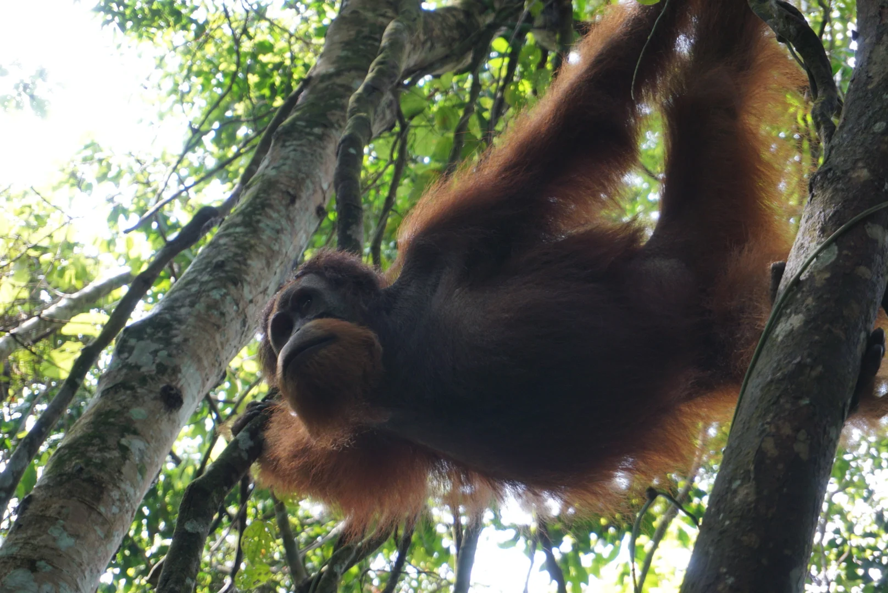

EN · English
ES · Español
DE · Deutsch
FR · Français
IT · Italiano
NL · Nederlands
PT · Português
WhatsApp ↗
BUKIT LAWANG · NORTH SUMATRA
↗

GUNUNG LEUSER
3.6°N · 98.1°E
↗
◎
✳
01 / BUKIT LAWANG
＋
02 / SUMATRA
03 / TEAM
04 / CATATAN
05 / SELAMAT DATANG
+34 615 788 239 ↗
↗
WhatsApp